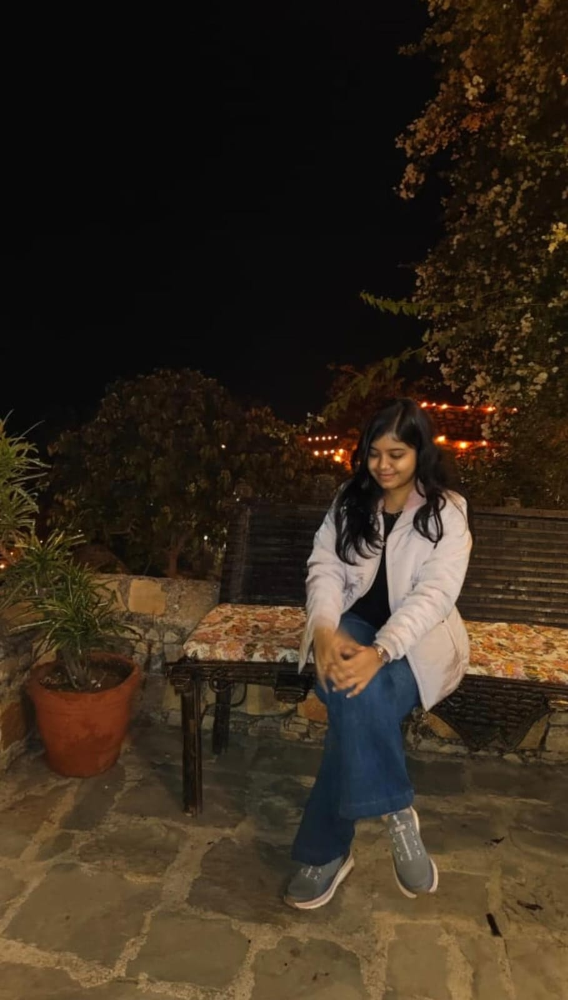
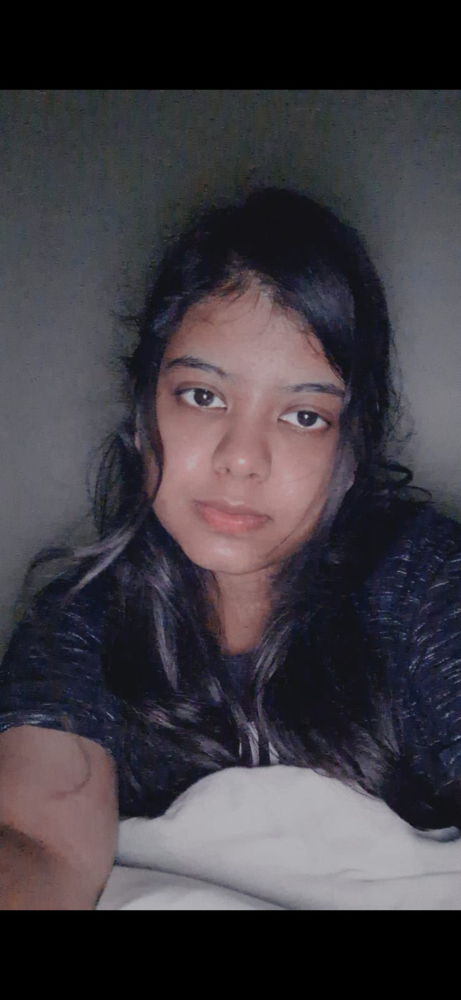
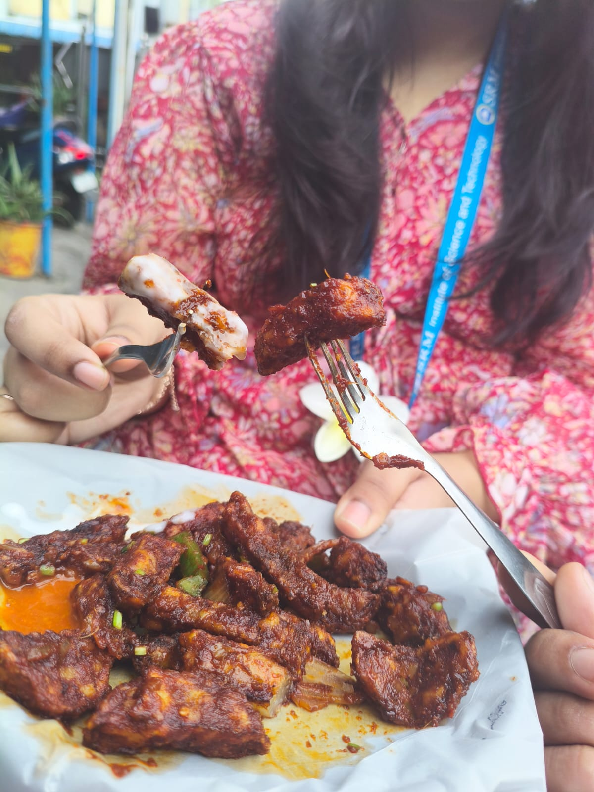
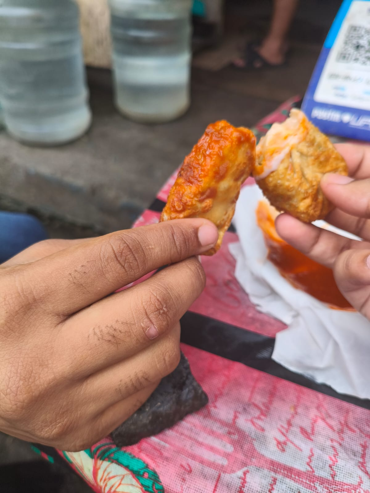
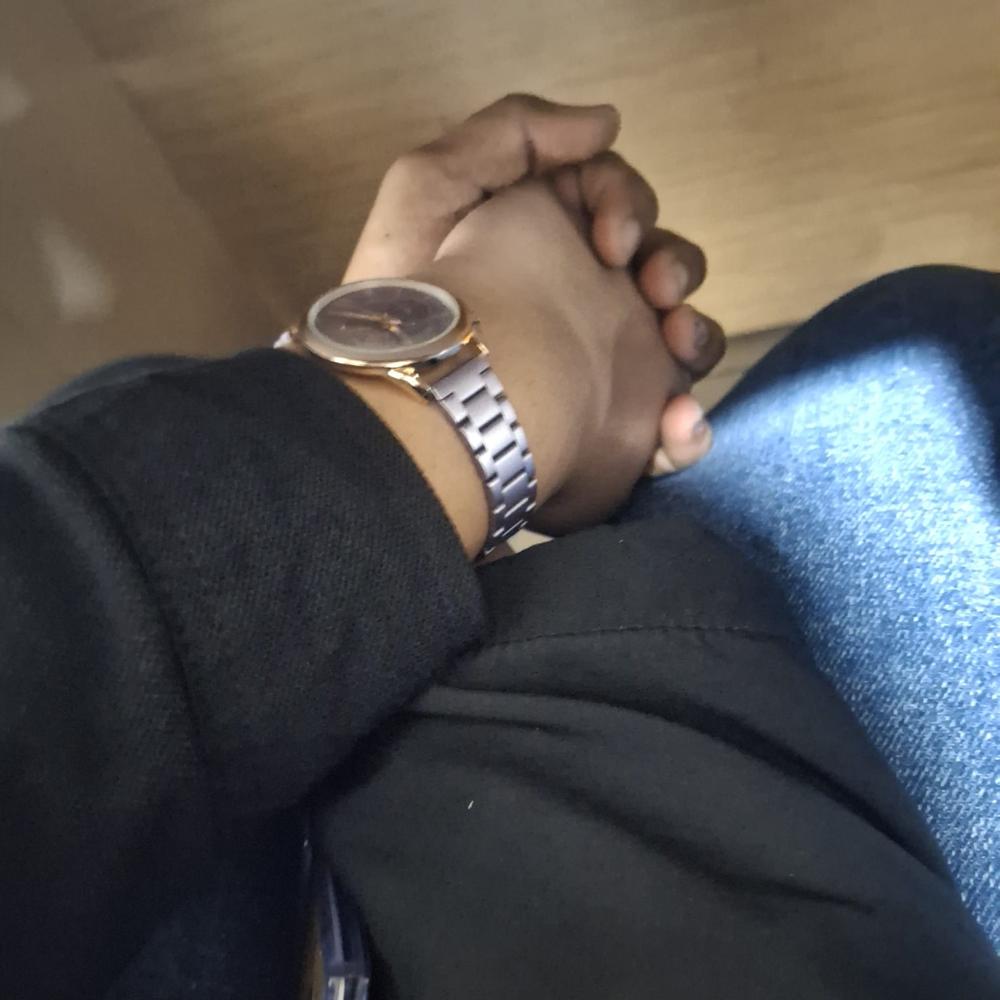
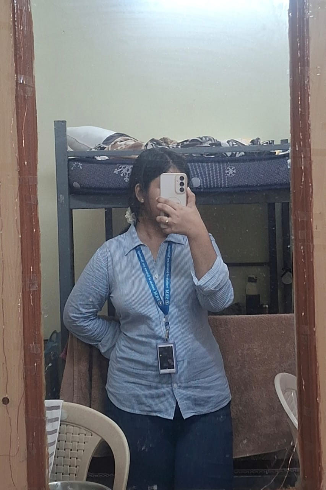
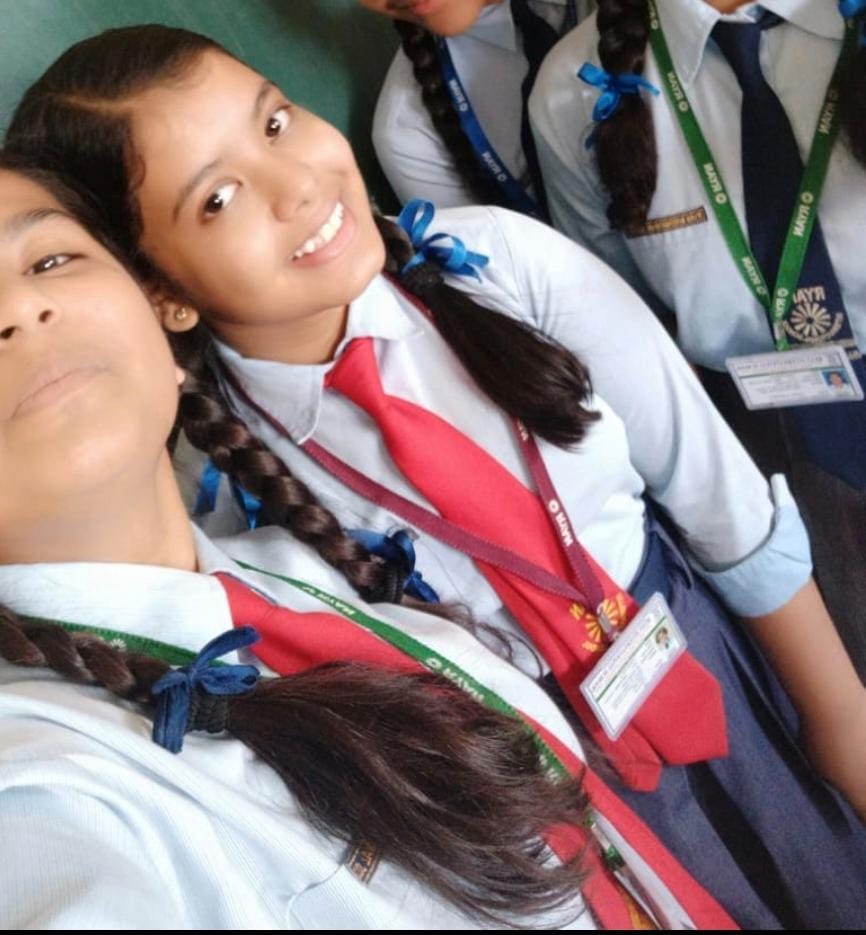

Aaj jab ye saal apne aakhri palon mein hai aur naya saal shuru hone wala hai, main sirf ek formal wish bhejna nahi chahta tha. Main chahta tha ki is saal ke end par, aur naye saal ke start par, aapko pata ho ki aap meri zindagi mein kya jagah rakhti ho, aur main aapke liye kya feel karta hoon.
Mujhe aaj bhi yaad hai wo pehla din jab maine aapko dekha tha. Aap group ke thoda peeche chal rahi thi, shant si, bilkul apne mein. Us waqt mujhe sirf itna laga tha ki aap attractive ho. Us ek moment mein mujhe bilkul idea nahi tha ki dheere-dheere aap meri life ka itna important hissa ban jaayengi. Aaj jab main peeche mudkar dekhta hoon, to lagta hai jaise us din zindagi ne bina bataye ek naya chapter shuru kar diya tha.
Jab humara introduction hua aur aapne apna naam bataya, phir Rajasthan se hone ki baat kahi, mujhe thoda confusion hua tha, isliye maine dobara pucha. Par us chhoti si baat ke beech bhi mujhe ek ajeeb sa connection feel hua. Wo Haryana aur Rajasthan ka nahi tha, balki nature ka tha. Aapka shant rehna, aapki simplicity, aur aapki presence — ye sab cheezein mujhe naturally attract kar rahi thi. Sach kahun to aise log zindagi mein bahut kam milte hain.
Phir humari baatein shuru hui. Dheere-dheere chatting badhi, raat ke conversations aaye. Beech mein logon ne mujhe kaha ki shayad aap serious nahi ho, shayad sirf time pass hai. Maine un baaton par bhi vichaar kiya. Main koi aisa insaan nahi hoon jo bina soche-samjhe kisi cheez par aankh band karke bharosa kar le. Isliye maine khud ko samjhaane ki koshish ki, ummeed chhodne ki bhi koshish ki. Par har baar dil ke kisi kone se awaaz aati thi ki shayad jo main feel kar raha hoon, wo bina wajah nahi ho sakta.
Birthday party ke din jab aap nahi aayi, mujhe sach mein bura laga. Us waqt mujhe laga shayad aap mujhse distance bana rahi ho. Shayad main aapke level ka nahi hoon. Shayad ye meri bas ki baat hi nahi hai. Main us din chup raha, par andar se kaafi sawal chal rahe the. Phir bhi, main aapko galat nahi soch paaya. Main bas khud ko kam samajhne laga.
Par sab kuch us din badal gaya jab main aapke paas baitha. Chemistry wali calculation ka moment mere liye thoda awkward tha, mujhe laga shayad main embarrassing situation mein hoon. Par wahi wo pal tha jab mujhe laga ki main aapse sach mein connect kar raha hoon. Wo ek simple sa moment tha, par mere liye bahut special. Aaj bhi jab main us pal ko yaad karta hoon, to lagta hai jaise wahi se cheezein real hone lagi thi.
Us din ghar jaakar maine apni behen ko sab kuch bataya. Usne sirf ek baat kahi — “Try kar.” Us ek sentence ne mujhe confidence diya. Usne mujhe ye samjhaya ki agar koi cheez dil se aa rahi hai, to usse dabaana sahi nahi hota.
Main jab apni life ko thoda peeche mudkar dekhta hoon, to mujhe ye samajh aata hai ki main hamesha se ek simple sa insaan raha hoon. Mujhe kabhi bhi bheed mein rehna pasand nahi tha, na hi zyada logon ke beech apni jagah banana. Main apni duniya mein khush tha. Par jab aap meri zindagi mein aayi, to mujhe pehli baar mehsoos hua ki shayad main sirf survive nahi kar raha tha, balki jee raha tha.
Aapke saath baatein karna mere liye kabhi boring nahi raha. Kabhi-kabhi to bas aapki awaaz sun lena hi kaafi hota tha. Mujhe yaad hai wo raaten jab hum thak chuke hote the, phir bhi baat khatam karne ka mann nahi karta tha. Mujhe yaad hai wo pal jab aap sirf “hmm” ya “acha” bhi kehti thi, aur mujhe wo bhi kaafi lagta tha, kyunki mujhe pata hota tha ki aap wahan ho.
Mujhe ye bhi yaad hai ki main kitni baar confuse raha. Kabhi laga ki main zyada soch raha hoon, kabhi laga ki shayad main hi cheezon ko zyada serious le raha hoon. Par jab bhi maine aapko ignore karne ki koshish ki, main khud ko ignore nahi kar paaya. Dil baar-baar wahi aa jaata tha — aap par.
Aap shayad ye nahi jaanti ki aapki presence ne mujhe kitna change kiya hai. Main pehle apni feelings ko daba deta tha. Main zyada express nahi karta tha. Par aapke saath mujhe laga ki apni feelings chupana galat hai. Aapne mujhe ye himmat di ki main jo mehsoos karta hoon, usse accept karun.
Kabhi-kabhi jab aap thodi door hoti thi, ya jab aap busy hoti thi, tab mujhe samajh aata tha ki aap meri zindagi mein kitni important ho. Wo gap mujhe sikhaata tha ki aapki value mere liye kya hai. Mujhe aapse har waqt baat karni zaroori nahi hoti thi, par mujhe aapse connected rehna zaroori lagta tha.
Main maanta hoon ki main perfect nahi hoon. Mujhse galtiyan hoti hain. Kabhi-kabhi main apni baat theek se rakh nahi paata. Kabhi-kabhi main zyada emotional ho jaata hoon. Par ek cheez jismein main kabhi confuse nahi raha — wo hai meri feelings aapke liye. Usme kabhi doubt nahi raha.
Aapke saath main future ke baare mein sochne laga. Wo future jismein sirf bade sapne nahi hote, balki chhoti chhoti baatein hoti hain — subah ki chai, thodi si nok-jhok, ek dusre ka mood samajhna, bina bole bhi baat samajh jaana. Mujhe glamorous future nahi chahiye, mujhe bas real future chahiye — aapke saath.
Is naye saal mein main aapse ye nahi keh raha hoon ki sab kuch perfect hoga. Zindagi kabhi perfect hoti bhi nahi. Par main ye zaroor keh raha hoon ki main har situation mein aapke saath khada rahunga. Jab aap strong hongi, tab bhi. Jab aap thak jaayengi, tab bhi. Jab aapko kisi par bharosa karna mushkil lagega, tab bhi.
Aap shayad kabhi kabhi sochti hongi ki agar aap mujhe hurt kar do, to main kya karunga. Sach kahun to, main hurt ho sakta hoon, par main chhod kar nahi jaunga. Kyunki mera pyaar ego se nahi, commitment se aata hai.
Is naye saal ke har din, har ghante, har minute, main aapke saath hoon — sirf presence mein nahi, intention mein bhi. Aapki khushi meri priority hai, aur aapka dard meri responsibility.
Uske baad cheezein itni naturally hone lagi ki mujhe lagne laga shayad ye sab sirf coincidence nahi hai. Agle din ka scene, phir dheere-dheere humara close hona — aaj bhi lagta hai jaise ye sab kisi plan ke under ho raha ho. Fir wo cab wala moment… agar Kabir ka chemistry ka re-test nahi hota, to shayad aaj hum yahan tak nahi hote. Ye chhoti chhoti cheezein thi, par mere liye inki value bahut zyada thi.
Aapki baaton se, aapke efforts se, aapki care se mujhe aapse pyaar ho gaya. Dheere-dheere aap meri aadat ban gayi. Video call pe jab aap so jaati thi, main kaafi der tak bas aapko dekhta rehta tha. Us waqt mujhe sirf ek hi feeling hoti thi — sukoon. Subah, shaam, raat — har waqt aap hi mere dimaag mein rehti thi. Ab to aisa lagta hai jaise aap mere sapno ka bhi hissa ban chuki ho.
Main aisa insaan hoon ki jab mujhe ek baar kisi se pyaar ho jaata hai, to main use aadha nahi rakhta. Shayad isi liye maine aapse jaldi pooch liya tha. Kyunki agar main aapko kho deta, to shayad main khud ko sambhaal nahi paata. Meri soch hamesha se yahi rahi hai ki zindagi aapke saath kaise bitaani hai, aapka khayal kaise rakhna hai, aur aapko kaise respect ke saath pyaar dena hai.
Aaj is naye saal par main aapse sirf ek baat kehna chahta hoon —
main har second aapke saath hoon.
Is naye saal ke har pal mein.
Chahe aap mujhse khush ho, chahe naraz.
Chahe aap mujhe samjho, ya na samjho.
Chahe aap mujhe pasand karo, ya kabhi na karo.
Agar kabhi aap mujhse nafrat bhi kar lo, tab bhi main aapse pyaar karta rahunga. Kyunki mera pyaar condition par based nahi hai. Ye wo pyaar hai jo saans chalne tak rehta hai. Aakhri saans tak.
Aaj jab main ye sab likh raha hoon, to mujhe pata hai ki shabd kabhi bhi poori tarah se feelings ko explain nahi kar paate. Phir bhi main likh raha hoon, kyunki main chahta hoon ki aapko kabhi bhi ye doubt na ho ki main aapke liye kya mehsoos karta hoon.
Agar zindagi ne kabhi aapko thaka diya, to main wo jagah banna chahta hoon jahan aap bina dar ke aaram kar sako. Agar duniya kabhi aap par ungli uthaye, to main wo insaan banna chahta hoon jo bina bole aapke side khada rahe. Agar kabhi aapko lage ki aap akeli ho, to main aapko yaad dilana chahta hoon ki aap akeli nahi ho.
Main ye nahi keh raha ki main best hoon. Main ye keh raha hoon ki main real hoon. Jo kehunga, sach kehunga. Jo karunga, dil se karunga. Aur jo pyaar karunga, wo aadha nahi hoga.
Ho sakta hai kabhi aap mujhse gussa ho jao. Ho sakta hai kabhi aap mujhe samajh na pao. Ho sakta hai kabhi aapko lage ki main aapke layak nahi hoon. Par ek cheez jo kabhi nahi badlegi — mera pyaar aapke liye.
Agar kabhi aap mujhe push kar do, main ruk jaunga, par door nahi jaunga. Agar kabhi aap mujhe ignore kar do, main shor nahi machaunga, par dil se wait karunga. Agar kabhi aap mujhe na bhi chaho, tab bhi main aapki izzat aur care karna nahi chhodunga.
Is naye saal mein main aapko koi fairy-tale promise nahi de raha. Main aapko real promises de raha hoon:
Main aapki baat sununga
Main aapke emotions ko lightly nahi lunga
Main aapko priority dunga
Main aapko respect dunga
Aur sabse important — main kabhi bhaagunga nahi
Mera pyaar aaj ka nahi hai. Ye kal ka bhi nahi hai. Ye wo pyaar hai jo waqt ke saath aur strong hota jaata hai. Ye wo pyaar hai jo har situation mein aapka haath pakad ke kehta hai — “Main hoon.”
Agar zindagi ke kisi mod par aap mujhse nafrat bhi kar lo, tab bhi main aapse pyaar karta rahunga. Agar aap mujhe apni zindagi se hata bhi do, tab bhi main dil se aapki khushi maangta rahunga. Kyunki mera pyaar sirf paane ke liye nahi hai, mera pyaar nibhane ke liye hai.
Aaj is naye saal ke din main bas itna kehna chahta hoon:
Main aapke saath hoon.
Is saal bhi.
Har saal bhi.
Har second bhi.
Aakhri saans tak bhi.
Chahe aap mujhe chaaho ya na chaaho,
chahe aap mujhse gussa ho ya khush,
mera pyaar kabhi kam nahi hoga.
Happy New Year, Suhani ji.
Aap meri life ka wo sach ho jise main kabhi jhooth nahi bana sakta.







“Dil hi to hai na sang-o-khisht, dard se bhar na aaye kyun.”
Agar aap saath ho — shukriya. Agar door ho — tab bhi shukriya.
Main har haal mein aapke saath hoon — bina shart, bina shikayat.
“Tumhara saath na bhi mila, to bhi tumhari izzat aur mohabbat meri aakhri saans tak rahegi.”